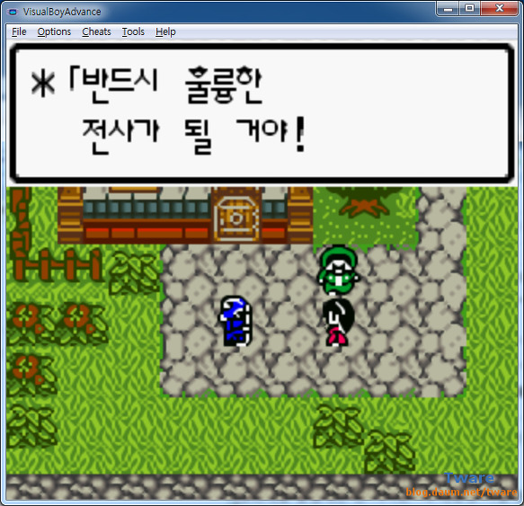
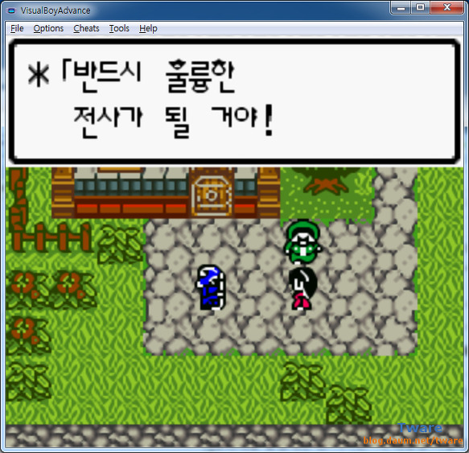
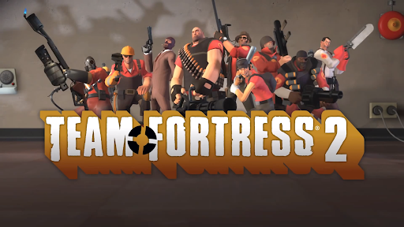

내 이야기
유년기
맨 처음 집에 컴퓨터가 생긴건 7살때로 기억한다.
그걸로 누나들이 야후꾸러기나 주니버네이버같은 인터넷 플레시 게임들을 하는걸 보고 나도 하고싶어서 졸랐었다.
어떻게든 네이버를 들어가려고 인터넷 검색으로 "너ㅣ이버" 라고 쳤던 기억이 생생하다.
내 세대때는 한창 CD게임들과 닌텐도같은 휴대용 게임기가 유행이였다.
집이 많이 가난했어서 친구들 다 있는 게임기 하나 없었고 집에 있는 컴퓨터가 전부였다.
그래서 나는 인터넷을 뒤져서 "게임보이 에뮬레이터" 나 엄청 졸라서 산 불법 CD게임으로 놀았던 것 같다.
인터넷 플래쉬게임 말고는 항상 친구들과는 한세대 뒤떨어진 게임만 할 수 있었다.
그러다 초등학교 3학년때 처음으로 부모님께 졸라서 온라인게임 계정 하나 만들고 "테일즈 런너"라는 했다.
그리고 6학년때는 무서운 형들이 득실거리던 PC방을 친구가 억지로 끌고 갔었다.
그때서부터 친구들과 어울리려고 여러 온라인게임을 PC방에서 접했던 것 같다.
 

청소년기
집도 가난했고 내가 매일 게임만 할거라는 생각에 부모님께서는 절대 컴퓨터를 바꿔주시지 않았다.
그래서 한창 온라인게임을 PC방에서 주구장창 주구장창했었고, 인터넷 방송이라는 것이 유행했었다.
BJ들은 온라인 게임과는 다른 "마인크레프트" 나 "스팀게임(비디오게임)" 을 했었다.
그때 친구들과 마인크레프트를 불법으로 다운받아서 내가 직접 서버를 만들고 플러그인 같은 것들을 만들거나 조금씩 수정하면서 나만의 서버를 만들어 플레이했다.
그러다가 중학교2학년때 스팀에서 Team Fortress2 라는 게임을 접하게 된다.
이 게임이 나의 인생을 바꾸는 계기가 되어줬다.
이 게임은 Steam이라는 플랫폼을 만든 Valve 라는 게임회사가 만든 게임이다.
Valve 의 신념은 유저가 직접 게임을 만들어 나가는 것이였다.
유저가 만든 모드나 아이템이 좋다고 생각하면 그 유저를 자기 회사로 스카웃하고 게임을 발전시켜갔다.
실제로 내 또래의 어린애가 Valve에 스카웃되어 취칙을 했다는 기사도 떳었다. 이게 날 더 자극했었다.
나는 이 게임에서 직접 서버를 구축하고 모드도 만들고 플러그인들도 만들었었다.
물론 이 과정들 모두 집에서는 할 수가 없어서 PC방에서 했었다.
내 서버에 찾아와 모두가 재밌다고 기뻐하는 모습이 너무너무나도 좋았다.
그때서부터 나는 게임개발에 흥미를 느꼈고 꼭 Valve에 입사하거나 나만의 게임회사를 만들자고 목표를 정했다.
물론 부모님은 게임뿐만 아니라 컴퓨터 쪽 직업은 결국 컴퓨터만 파는 일이나 할거라고 극구반대하셨다.
하지만 부모님이 반대하실때마다 내 꿈과 목표는 더 견고해져갔다.
수업중에도 갑자기 게임 구상이 생각나거나 했을때 노트에 끄적이거나 스케치를 하거나 했었다.
그만큼 나는 게임개발에 푸욱 빠져있었다.

« Previous Next »